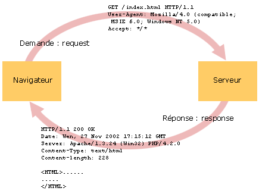

Le Web utilise le protocole HTTP et PHP fournit des variables superglobales pour travailler avec les informations transportées par ce protocole.
Ces informations sont regroupées sous la forme de tableaux superglobaux intialisés automatiquement par PHP.
Le Web est basé sur l'utilisation du protocole HTTP
(HyperText Transfer Protocol) qui gére la demande (request), de fichiers du
client (le navigateur) et la réponse (response) du serveur Web.
Le protocole HTTP décrit le format des échanges entre le client et le serveur.
Le serveur Web est à l'écoute, par défaut sur le port 80. Le client envoie des requêtes au serveur (demande de fichier). Quand le serveur reçoit une requête, il la traite, puis il envoie une réponse (le contenu du fichier demandé se trouve dans la réponse). C'est toujours le client qui est à l'initiative de l'échange.
Le mot "fichier" doit être entendu comme tout type de fichier demandé par un navigateur : fichier HTML, CSS, JavaScript, JPG, GIF, PNG, PHP, JSP, ASP, PDF, etc, etc.
Une requête HTTP (i.e. message du client vers le serveur) présente le format suivant :
Commande URL Version_de_protocole en-tête_1_HTTP : valeur ... en-tête_n_HTTP : valeur [Ligne vide] Corps de requête
La première ligne constitue la ligne de commande. Exemple :
GET http://sciences.univ-fcomte.fr/index.html HTTP/1.1
Cette ligne spécifie une commande HTTP ou une méthode (ici GET), suivie de l'URL de la page
demandée (ici http://sciences.univ-fcomte.fr/index.html), et de la version du protocole utilisé (ici
HTTP/1.0).
Traduction : le client demande, avec une commande GET, la page index.html du site
sciences.univ-fcomte.fr,
en utilisant la version version 1.1 du protocole HTTP.
Il existe de nombreuses commandes ou méthodes, les plus courantes étant GET, HEAD et POST :
Dans la suite de ce chapitre, nous allons nous interesser exclusivement aux requêtes GET et POST.
La ligne de commande est suivie de lignes d'en-têtes, qui donnent notamment des informations sur le client qui fait la demande. Exemple :
User-Agent: Mozilla/5.0 (Windows NT 6.1) Gecko/20100101 Firefox... Host: sciences.univ-fcomte.fr Accept: text/html,application/xhtml+xml,application/xml;q=0.9,... Accept-Language: en-us,en;q=0.5 Accept-Encoding: gzip, deflate ...
L'en-tête User-Agent par exemple, donne des informations sur le navigateur qui fait la demande. L'en-tête Accept spécifie quant à lui les types MIME acceptés par le navigateur.
La requête du client peut éventuellement contenir un corps séparé des lignes d'en-têtes par une ligne vide. Dans le cas d'une requête GET, le corps est vide; alors que dans le cas d'une requête POST, le corps de la requête contient les données saisies dans le formulaire.
Une réponse HTTP (i.e. message du serveur vers le client) présente le format suivant :
Version Code-statut Texte-statut en-tête_1_HTTP : valeur ... en-tête_n_HTTP : valeur [Ligne vide] Corps de réponse
La première ligne est une ligne de statut. Exemple :
HTTP/1.1 200 OK
Cette ligne indique la version du protocole (ici HTTP/1.0), le code de statut (ici
200)
et la description de ce code (ici OK).
Exemples de code de statut :
Après la ligne de statut, on trouve des lignes d'en-têtes dans lesquels le serveur fournit des informations sur le logiciel serveur, le type MIME du contenu (en-tête Content-Type), le nombre de caractères transmis (en-tête Content-Length), etc. Exemple :
Date: Fri, 31 Dec 1999 23:59:59 GMT Server: Apache Content-Type: text/html Content-Length: 1059 Expires: Sat, 01 Jan 2000 00:59:59 GMT Last-modified: Fri, 09 Aug 1996 14:21:40 GMT
Aprés une ligne vide, on trouve dans le corps du message, les données demandées (i.e. le code HTML d'une page, le contenu binaire d'un fichier image, le code d'un fichier CSS, le code d'un fichier JavaScript, etc.).
Par exemple, quand dans la page sommaire, vous avez cliqué sur le lien de cette page, la requête HTTP suivante (ou quelque chose d'approchant) a été envoyée par votre navigateur au serveur qui héberge le tutoriel :
GET /pl ... rts/php/php06/php06a.html HTTP/1.1 Host: moodle.univ-fcomte.fr User-Agent: Mozilla/5.0 (Windows NT 6.1; ... Accept: text/html,application/xhtml+xml,application/xml;q=0.... Accept-Language: en-us,en;q=0.5 Accept-Encoding: gzip, deflate Connection: keep-alive Referer: http://moodle.univ-fcomte.fr/pl ... rts/php/php/tutodef.html Cookie: MoodleSession=2n1e9bzb8q810iu1200e3b16q4
Le serveur a envoyé la réponse suivante (ou quelque chose d'approchant) :
HTTP/1.1 200 OK Date: Sat, 29 Sep 2012 16:17:22 GMT Server: Apache X-Powered-By: PHP/5.3.3-7+squeeze13 Expires: Sun, 30 Sep 2012 16:17:22 GMT Last-Modified: Sat, 29 Sep 2012 16:17:22 GMT Content-Encoding: gzip Content-Length: 13818 Content-Type: text/html <!DOCTYPE html> <html lang="fr"> <head> <title>Les formulaires</title> <meta charset="UTF-8"> <meta http-equiv="X-UA-Compatible" content="IE=edge,chrome=1"> <link rel="stylesheet" href="../_local/codemirror.css"> <script src="../_local/codemi .... ....... suite du code HTML de la page .... .......
Pour simplifier, à chaque fois qu'une URL est saisie par l'utilisateur ou qu'un lien est cliqué, une requête GET est envoyée au serveur.

De même, toutes les ressources liées dans le code HTML d'une page (images, feuilles de styles, scripts JavaScript, etc.) sont demandées au serveur par des requêtes GET.
Les formulaires permettent à l'utilisateur de saisir des données et de les envoyer au serveur pour traitement. Suivant la commande ou la méthode utilisée pour envoyer ces données, elles ne se trouveront pas au même endroit dans la requête HTTP.
Avec la méthode GET, les données saisies dans les zones du formulaires seront envoyées dans l'URL (on parle de query string, ou paramètre ici).
Dans le formulaire suivant, saisissez quelque chose dans les 2 zones puis cliquez sur le bouton "Connexion". Un nouvel onglet va s'ouvrir avec le résultat de l'envoi du formulaire.
Avec la méthode POST, les données saisies dans les zones du formulaires seront envoyées dans le corps du message HTTP.
Faites la saisie de ce formulaire qui lui utilise la méthode POST.
Les données sont envoyées au serveur sous la forme de couples cle=valeur
soit Nom_de_zone_dans_le_formulaire=données_saisies_dans_la_ zone.
Reprenons l'exemple du formulaire précédent qui contient deux zones de texte pour la saisie d'un login et d'un mot de passe et un bouton pour envoyer le formulaire. Le code HTML est quelque chose comme :
<form method="POST" action="formulaire01_post.html"> Login <input type="text" name="txtLogin"> Mot de passe <input type="password" name="txtPasse"> <input type="submit" name="btnConnecter" value="Connexion"> </form>
L'attribut action de l'élément form spécifie le nom du script qui est appelé lors de la soumission du formulaire, c'est à dire lorsque le visiteur clique sur le bouton de soumission (le bouton "Connexion").
Le nom des zones est défini par l'attribut name.
Si l'utilisateur saisit respectivement "moi" et "xyz", puis clique
sur le bouton de soumission, l'envoi au serveur sera :
txtLogin=moi&txtPasse=xyz&btnConnecter=Connexion
Suivant la valeur de l'attribut method de l'élément form, cette chaîne de caractères sera transmise
Avec la méthode GET, les données saisies dans les zones du formulaires seront envoyées dans l'URL (plus précisément dans la partie query string, de l'URL).
Avec la méthode POST, les données saisies dans les zones du formulaires seront envoyées dans le corps du message HTTP.
Une autre différence entre GET et POST se situe dans la définition du protocole HTTP : les demandes GET sont idempotentes, c'est à dire que les demandes pour une même URL devraient être considérées identiques, quelque soit les paramètres qui sont passés. Le navigateur pourrait donc mettre en cache le résultat d'une page soumise avec la méthode GET, et si vous soumettez à nouveau votre page, avec d'autres paramètres, vous risquez que la page stockée dans le cache soit réaffichée, à la place de ce que vous avez réellement demandé. Les demandes POST ne sont pas idempotentes, et les pages de résultat ne sont pas stockées dans le cache par le navigateur, garantissant un affichage correct des pages demandées.
Dans le script PHP, les informations envoyées par le navigateur seront récupérées dans des tableaux superglobaux (dont nous avons déjà parlé dans "Notions de base - Variables prédéfinies").
Si le formulaire est envoyé avec la méthode POST, on retrouvera les couples clé/valeur dans le tableau superglobal associatif $_POST. Le nom des zones utilisé dans le formulaire deviendra le nom des clés du tableau, et les valeurs saisies seront les valeurs associées à ces clés.
Si le formulaire est envoyé avec la méthode GET, on retrouvera les couples clé/valeur dans le tableau superglobal associatif $_GET. On trouvera aussi dans ce tableau, tous les "paramètres" qui pourraient être écrits directement dans l'URL, après le caractère ?, sans qu'on ait besoin d'utiliser un formulaire.
Rappel : on trouve dans PHP les tableaux superglobaux suivants :
| $_COOKIE | ensemble des cookies |
| $_GET | paramètres passés au script via son URL (formulaire soumis avec la méthode GET, ou paramètres directement écrits dans l'URL) |
| $_POST | paramètres passés au script via un formulaire soumis avec la méthode POST |
| $_FILES | variables fournies par le protocole HTTP, suite à un upload de fichier |
| $_REQUEST | constitué du contenu des variables $_GET, $_POST, $_COOKIE, et $_FILES |
| $_SESSION | variables créées lors d'une session. |
| $_ENV | variables de l'environnement d'exécution de PHP |
| $_SERVER | variables fournies par le serveur HTTP |
Parmi les variables contenues dans $_SERVER, la plus utilisée est sans doute la valeur située à la clé PHP_SELF qui représente le chemin vers la page elle-même.